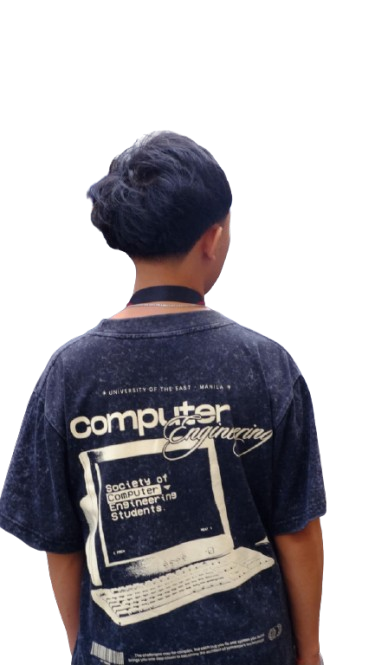

>_ WELCOME TO MY BIONOTE
Joshua Purificacion
Computer Engineering Student
Bridging the gap between hardware and software through practical, innovative solutions.
Computer Engineering
University of the East
>_ ABOUT
"I learn by building, and I build to learn."
I am a Computer Engineering student at the University of the East with a strong passion for bridging the gap between hardware and software. My technical journey revolves around creating practical, innovative solutions — whether that means assembling microcontroller prototypes and programming autonomous Arduino robots, or writing clean, efficient code for mobile applications.

>_ SKILLS
Languages
Embedded / Hardware
Dev Tools
Design
>_ PROJECTS
>_ CONTACT
Thanks for stopping by — whether it's a hardware hack, a side project, or just a conversation about engineering, I'd love to hear from you.